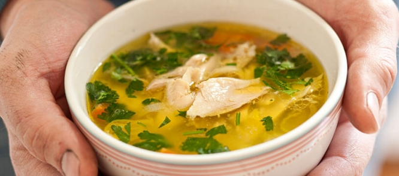

Kippensoep
Dit gehaktbrood kan prima bij een avondmaaltijd, maar is ook een makkelijk gerecht voor een buffet.
Ingrediënten
- 2L water
- 2 kippenbouten (ongeveer 800 g)
- 1 ui
- 1 prei
- 2 stengels bleekselderij
- 1 winterwortel
- 1 stukje foelie
- 2 laurierblaadjes
- 6 zwarte peperkorrels
- wat zout
- 1 handjevol vermicelli
- wat verse peterselie, fijngesneden
Bereidingswijze
-
Doe het water met de kippenbouten in een grote pan en breng het aan de kook.
-
Maak de groentes schoon en snijd ze in stukjes.
Voeg de groentes en de specerijen toe en breng opnieuw aan de kook.
-
Zet de pan met soep vervolgens op een laag vuurtje.
-
Laat het zo enkele uren zachtjes pruttelen.
-
Haal de kippenbouten uit de soep en haal het vlees van de botten.
-
Trek het vlees in kleinere stukjes en doe het weer terug in de pan.
-
Voeg nu ook de vermicelli en de peterselie toe en laat de soep nog een kwartiertje doorpruttelen.

Tip: Je kunt de soep meteen eten, maar de volgende dag is hij is meestal nog lekkerder.